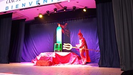
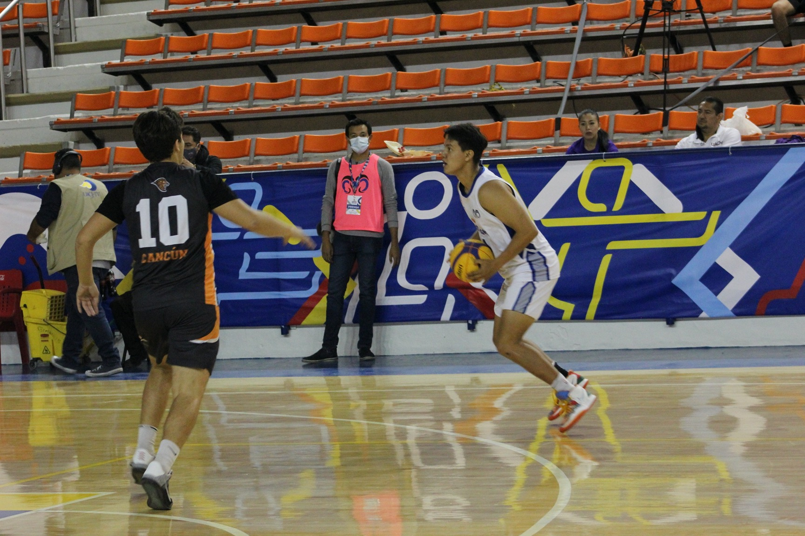

EL PARAESCOLAR DE TEATRO SE ENFOCA LOS PRIMEROS DOS AÑOS EN PONEREN MARCHA UNA OBRA DE TEATRO, CLARAMENTE AL PRINCIPIO DEL AÑO SE EXPLICAN LAS BASES DEL TEATRO Y TODO LO QUE UN PRINCIPIANTE TIENE QUE APRENDER, EN EL 3 AÑO SE ENTRENA LA IMPROVISACION YA QUE AL ESTAR MAS ENFOCADOS EN LA UNIVERSIDAD NO TENEMOS TANTO TIEMPO PARA APRENDER O ENSAYAR UNA OBRA.

Futbol
en el paraescolar de futbol se enfoca en el primer año ser teorico, en el segundo año es practica y entrenamiento y algunas veces van a competir, en el tercer año se enfocan en ir a competencias y seguir entrenando.
Basquetbol
EL PARAESCOLAR DE BASQUETBOL SON DE DOS HORAS LOS MARTES Y JUEVES, EN ESTOS ENTRENAMIENTOS AL PRINCIPIO SE ESTUDIA TEORIA, REGLAS, INCLUSO SE DEJAN MAQUETAS Y YA EN LOS SIGUIENTES SEMESTRES SE VA ENTRENANDO PARA ENTRAR A SELECTIVO O SOLO PARA MEJORAR EN EL DEPORTE, AL EQUIPO DE SELECTIVO LO MANDAN A COMPETIR A VARIAS ESCUELAS Y SE CUENTA CON MUCHOS TROFEOS DE CAMPEONATOS EN LAS OFICINAS DE BACHILLERES 2

Voleibol
EN EL PARAESCOLAR DE VOLEIBOL PRIMERO SE APLICA LA TEORIA Y DESPUES EMPIEZAN CON ETRENAMIENTOS, EN ESTE SE ENFOCAN MAS EN EL ENTRENAMIENTO CON EQUIPO, EL SELECTIVO VA A COMPETIR A ESCUELAS Y COMO EN BASQUET, SE HAN TRAIDO TROFEOS A BACHILLERES 2